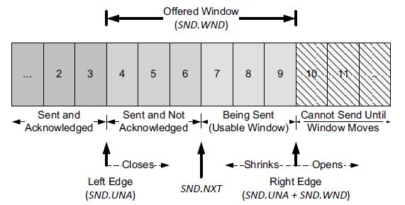
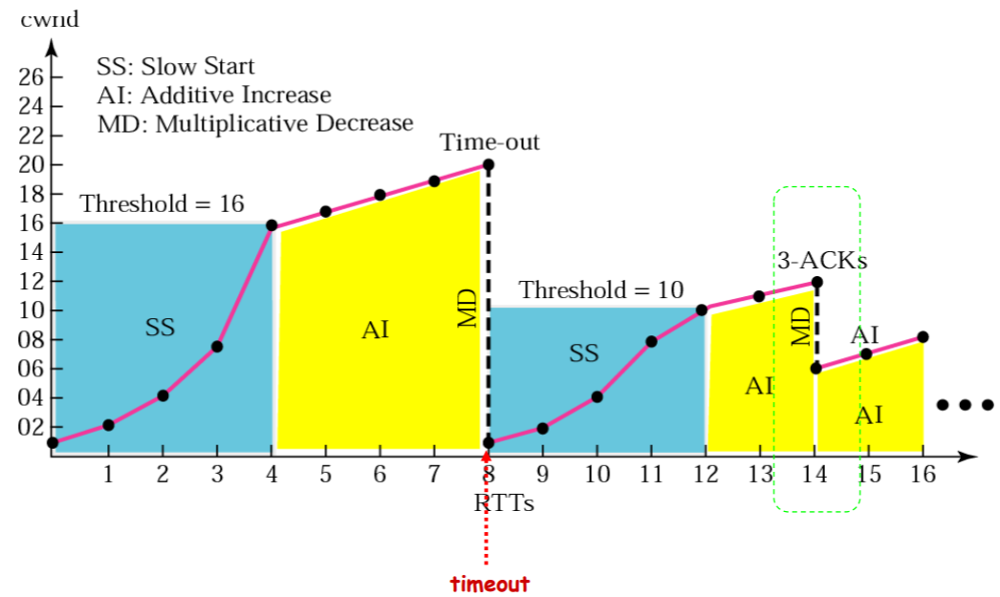

TCP Timer
Retransmission timer
When TCP sends a group of segments, it normally sets a single retransmission timer, waiting for the other end to acknowledge reception. TCP does not set a different retransmission timer for every segment. Rather, it sets a timer when it sends a window of data and updates the timeout as ACKs arrive. If an acknowledgment is not received in time, a segment is retransmitted.Keepalive timer
Under some circumstances, it is useful for a client or server to become aware of the termination or loss of connection with its peer. In other circumstances, it is desirable to keep a minimal amount of data flowing over a connection, even if the applications do not have any to exchange. TCP keepalive provides a capability useful for both cases. Keepalive is a method for TCP to probe its peer without affecting the content of the data stream. It is driven by a keepalive timer. When the timer fires, a keepalive probe (keepalive for short) is sent, and the peer receiving the probe responds with an ACK.Persist timer in zero-window scenario
If an acknowledgment (containing a window update) is lost, we could end up with both sides waiting for the other: the receiver waiting to receive data (because it provided the sender with a nonzero window and expects to see incoming data) and the sender waiting to receive the window update allowing it to send. To prevent this form of deadlock from occurring, the sender uses a persist timer to query the receiver periodically, to find out if the window size has increased. The persist timer triggers the transmission of window probes. Also see in RFC1122.
TCP Sliding Windows
- TCP Sliding Windows

TCP Congestion Control
Self-Clock based on ACK
TCP Timeout and Retransmission Timeout
High Bandwidth-Delay-Product, with scaling window size
Slow Start, Congestion Avoidance, Fast Retransmit, and Fast Recovery Algorithms, RFC2001
Slow start: each time an ACK is received, the congestion window is increased by one segment. The sender can transmit up to the minimum of the congestion window and the advertised window.
Congestion window, cwnd, the flow control imposed by the sender. While the advertised window if flow control imposed by the receiver. The former is based on the sender’s assessment of perceived network congestion; the latter is related to the amount of available buffer space at the receiver for this connection.
Fast retransmit, If three or more duplicate ACKs are received in a row, it is a strong indication that a segment has been lost. TCP then performs a retransmission of what appears to be the missing segment, without waiting for a retransmission timer to expire.
Congestion avoidance, except cwnd, another varible is needed, ssthresh, a slow start threshold.
If cwnd is less than or equal to ssthresh, TCP is in slow start; otherwise TCP is performing congestion avoidance.
After fast retransmit sends what appears to be the missing segment, congestion avoidance, but not slow start is performed.
1
2
3
4
5
6
7
8
9
10
11
12
13
14
15
161. Initialization for a given connection sets cwnd to one segment
and ssthresh to 65535 bytes.
2. The TCP output routine never sends more than the minimum of cwnd
and the receiver's advertised window.
3. When congestion occurs (indicated by a timeout or the reception
of duplicate ACKs), one-half of the current window size (the
minimum of cwnd and the receiver's advertised window, but at
least two segments) is saved in ssthresh. Additionally, if the
congestion is indicated by a timeout, cwnd is set to one segment
(i.e., slow start).
4. When new data is acknowledged by the other end, increase cwnd,
but the way it increases depends on whether TCP is performing
slow start or congestion avoidance.
Congestion avoidance dictates that cwnd be incremented by segsize*segsize/cwnd each time an ACK is received, where segsize is the segment size and cwnd is maintained in bytes. This is a linear growth of cwnd, compared to slow start’s exponential growth.
TCP Congestion Control illustrate
Bandwith Utilization of Competion Between Multiple-Flows
TCP Connection Establishment and Termination
- Connection Set-Up: Three-Way Handshake

- Connection Close: Modified Three-Way Handshake

- TCP State Machine

Some Problems
- Without any flow control, mixed with tcp and udp streams, tcp streams are always starved.
- Silly window syndrome, when it occurs, small data segments are exchanged across the connection instead of full-size segments, RFC0813, RFC1122.
1
2
3
4
5
6
7
8
9
10
11
12
13
14
15
16
171. When operating as a receiver, small windows are not advertised. The receive
algorithm specified by [RFC1122] is to not send a segment advertising a
larger window than is currently being advertised (which can be 0) until the
window can be increased by either one full-size segment (i.e., the receive
MSS) or by one-half of the receiver’s buffer space, whichever is smaller.
Note that there are two cases where this rule can come into play: when buffer
space has become available because of an application consuming data
from the network, and when TCP must respond to a window probe.
2. When sending, small segments are not sent and the Nagle algorithm governs
when to send. Senders avoid SWS by not transmitting a segment
unless at least one of the following conditions is true:
a. A full-size (send MSS bytes) segment can be sent.
b. TCP can send at least one-half of the maximum-size window that the
other end has ever advertised on this connection.
c. TCP can send everything it has to send and either (i) an ACK is not currently
expected (i.e., we have no outstanding unacknowledged data) or
(ii) the Nagle algorithm is disabled for this connection.
Other Choice but TCP
Reference
- TCP/IP Illustrated, Volume I The Protocols(Second Edition)
- An Introduction to Computer Networks: Chapter 12, TCP Transport